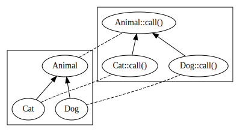
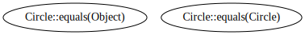
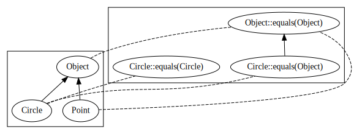

CS2030S
Recitation 1
Welcome!
Darius Foo
Office hours: 11am to 12pm, Thursdays, AS3-06-09
Recap
Object-oriented programming?
Encapsulation
Encapsulation: program + dataInformation hiding
Information hiding: private implementationTell, don’t ask
Tell, don’t ask: operations on objects
Composition
Composition: has-aInheritance
Inheritance: is-a/more specificPolymorphism
Polymorphism: children differ/dynamic dispatchOverriding
Overriding: re(de)fine parent behaviourLSP
LSP: what specific meansAbstract class/interface
Abstract class/interface: let children fill in
Today
- Encapsulation
- Evaluation in Java
- More practice
Recitation 2 (week 4)
Today
- Overriding vs overloading
- Tricky inheritance situations
- Interfaces
Compile-time vs runtime
- At compile-time, we can only analyze code, i.e. we can’t run it
- Certain information is unavailable and must be approximated, e.g. types
Animal a;
if (scanner.nextBoolean()) {
a = new Dog();
} else {
a = new Cat();
}
a.call(); // ?- aka “phase distinction”, static vs dynamic
Overriding
class Dog extends Animal {
@Override
void call() {
System.out.println("woof!");
}
}
class Cat extends Animal {
@Override
void call() {
System.out.println("meow!");
}
}Which method is called depends on the runtime type of the receiver, this:
Animal a = ...;
a.call(); // depends on ...Overloading
static void call(Dog d) {
System.out.println("woof!");
}
static void call(Cat d) {
System.out.println("meow!");
}Which method is called depends on the compile-time types of the receiver and parameters (and not the return type):
Animal a = ...;
call(a); // will not compileDog d = new Dog();
call(d); // compiles and resolves to call(Dog)Overriding vs overloading
- Overloading resolves at compile-time, so relies only on compile-time information
- Overriding resolves at runtime, so relies on run-time information (“dynamic dispatch”)
Overriding vs overloading
- Tradeoff between expressiveness and guarantees
- Bridging the gap
- Casts are runtime assertions that give us (shaky) compile-time guarantees
- We lose information when casting up, but gain (dubious) information when casting down
Animal a = ...;
Dog d = (Dog) a; // gain info, but dubious (may fail)
Animal b = d; // lose info, but always works
Animal c = (Animal) d; // same as previousIntuitively

Inheritance creates trees
Intuitively

Overriding arranges methods into a tree, leading to lines (as in lineage) of methods
Intuitively
- The full name of a method is actually its name + receiver and parameter types
- Overloading is just calling a method by its full name

Intuitively
- Overloading chooses a line of methods at compile-time
- Overriding chooses a single method on the line at runtime

Playing compiler
How do we figure out which method is called?
- Look for the method of the same name with the closest receiver and parameter types (“overload resolution”)
- At runtime, methods which
@Overrideit may instead be called
(@Override is an optional assertion that may fail compilation if a method isn’t overriding anything)
Q1a
Circle c1 = new Circle(new Point(0, 0), 10);
Circle c2 = new Circle(new Point(0, 0), 10);
Object o1 = c1;
Object o2 = c2;
Q1a
Circle c1 = new Circle(new Point(0, 0), 10);
Circle c2 = new Circle(new Point(0, 0), 10);
Object o1 = c1;
Object o2 = c2;jshell> o1.equals(o2)
equals(Object) called
$.. ==> falseo1is a compile-timeObject, so only theequals(Object)line is eligible- The overriden
equals(Object)is called Pointdoesn’t overrideequals, sofalse.
Q1b
Circle c1 = new Circle(new Point(0, 0), 10);
Circle c2 = new Circle(new Point(0, 0), 10);
Object o1 = c1;
Object o2 = c2;jshell> o1.equals((Circle) o2)
equals(Object) called
$.. ==> falseDoesn’t change the fact that o1 is a compile-time Object.
Q1c
Circle c1 = new Circle(new Point(0, 0), 10);
Circle c2 = new Circle(new Point(0, 0), 10);
Object o1 = c1;
Object o2 = c2;jshell> o1.equals(c2)
equals(Object) called
$.. ==> falseSame.
Q1d
Circle c1 = new Circle(new Point(0, 0), 10);
Circle c2 = new Circle(new Point(0, 0), 10);
Object o1 = c1;
Object o2 = c2;jshell> o1.equals(c1)
equals(Object) called
$.. ==> trueSame, but now o1 and c1 are the same object, so true.
Q1e
Circle c1 = new Circle(new Point(0, 0), 10);
Circle c2 = new Circle(new Point(0, 0), 10);
Object o1 = c1;
Object o2 = c2;jshell> c1.equals(o2)
equals(Object) called
$.. ==> false- Now both lines are eligible, but
o2is a compile-timeObject, so overload resolution choosesequals(Object). - At runtime, the overriden version is called.
falsestill becausePointdoesn’t overrideequals.
Q1f
Circle c1 = new Circle(new Point(0, 0), 10);
Circle c2 = new Circle(new Point(0, 0), 10);
Object o1 = c1;
Object o2 = c2;jshell> c1.equals((Circle) o2);
equals(Circle) called
$.. ==> falseo2is a compile-timeCircleso overload resolution choosesequals(Circle)as it’s closer.
Q1g
Circle c1 = new Circle(new Point(0, 0), 10);
Circle c2 = new Circle(new Point(0, 0), 10);
Object o1 = c1;
Object o2 = c2;jshell> c1.equals(c2)
equals(Circle) called
$.. ==> falseSame as previous.
Q1h
Circle c1 = new Circle(new Point(0, 0), 10);
Circle c2 = new Circle(new Point(0, 0), 10);
Object o1 = c1;
Object o2 = c2;jshell> c1.equals(o1)
equals(Object) called
$.. ==> trueSame as 1e (equals(Object) chosen), except now we have two references to the same object, so true.
2a
public class Rectangle {
private double width;
private double height;
public Rectangle(double width, double height) {
this.width = width;
this.height = height;
}
@Override
public String toString() {
return "Height: " + this.height + " Width: " + this.width;
}
}2a
A Square is a Rectangle with equal sides.
public class Square extends Rectangle {
public Square(double length) {
super(length, length);
}
}2b
Square inherits setWidth and setHeight, and we can now create invalid Squares.
jshell> Square s = new Square(5.0)
s ==> Height: 5.0 Width: 5.0
jshell> s.setHeight(4)
jshell> s
s ==> Height: 4.0 Width: 5.02c
LSP: anywhere we can use a Rectangle, we should also be able to use a Square…
jshell> Rectangle[] rects = {new Rectangle(3.0, 5.0), new Square(5.0)}
rects ==> Rectangle[2] { Height: 5.0 Width: 3.0, Height: 5.0 Width: 5.0 }
jshell> rects[0].setHeight(4.0)
jshell> rects[0].setWidth(8.0)
jshell> rects[0]
$.. ==> Height: 4.0 Width: 8.0
jshell> rects[1].setHeight(4.0)
jshell> rects[1].setWidth(8.0)
jshell> rects[1]
$.. ==> Height: 8.0 Width: 8.0Now rectangles behave weirdly – we didn’t expect the call to setHeight to be forgotten.
2c
How do we get out of this?
Maybe a rectangle is a kind of square?
That doesn’t really make sense.
2c
It seems like Square and Rectangle should not inherit from each other.
But isn’t inheritance for modelling is-a relationships? What’s the problem?
2c
This is a bit of a trick question because adding setters allows width and height to vary independently. Rectangle isn’t just a platonic rectangle; it includes setters!
The implementation in 2a without setters models the is-a relationship just fine.
Conclusion: mutability ruins complicates nice things
2c
Fixes:
- Immutability
- Add
setSide(double)toSquareand throw exceptions insetHeightandsetWidth - Require
setHeightandsetWidthto be used together
3a

Circle c = new Circle(new Point(0,0), 10);
// compile-time type: Shape, runtime type: Circle
Shape s = c;
// compile-time type: Printable, runtime type: Circle
Printable p = c;s.print(); // no, not a compile-time Printable
p.print(); // yes
s.getArea(); // yes
p.getArea(); // no, not a compile-time Shape3b/c
No, we can’t inherit from multiple abstract classes like we can from multiple interfaces.
Yes, interfaces can inherit from multiple parent interfaces.